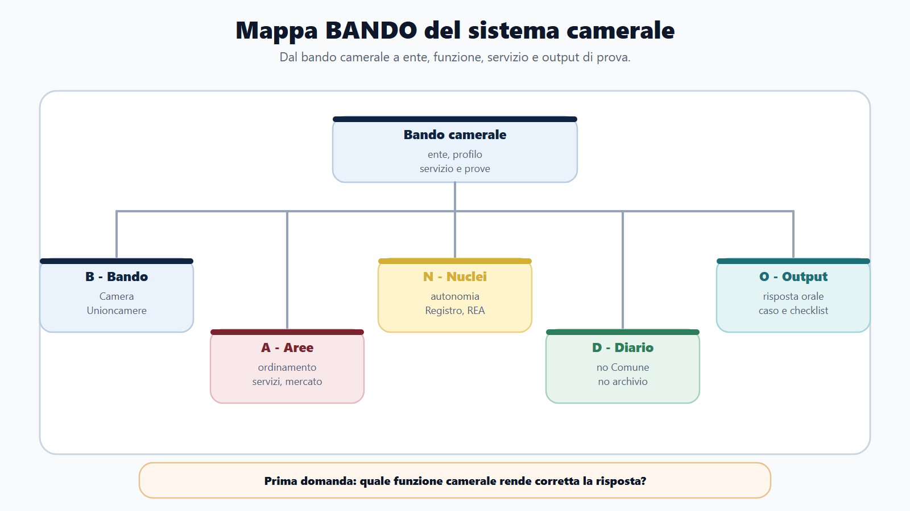
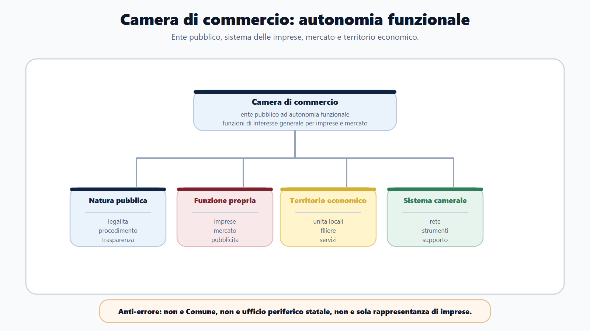
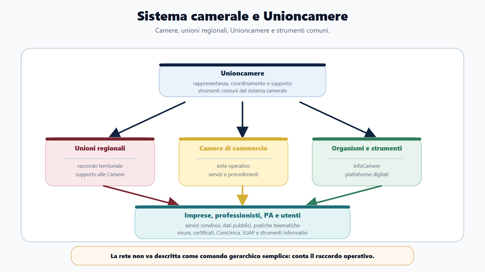
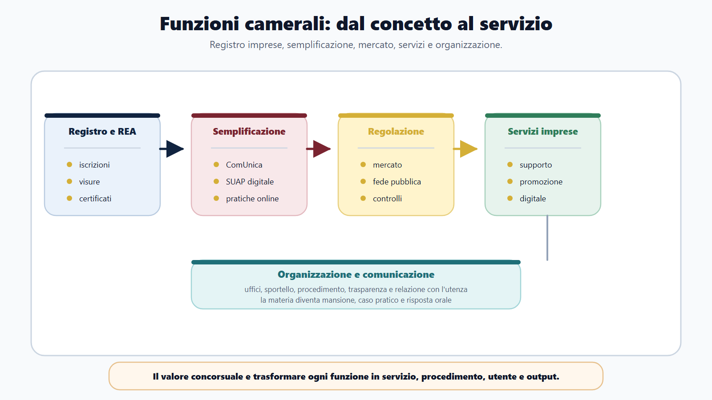
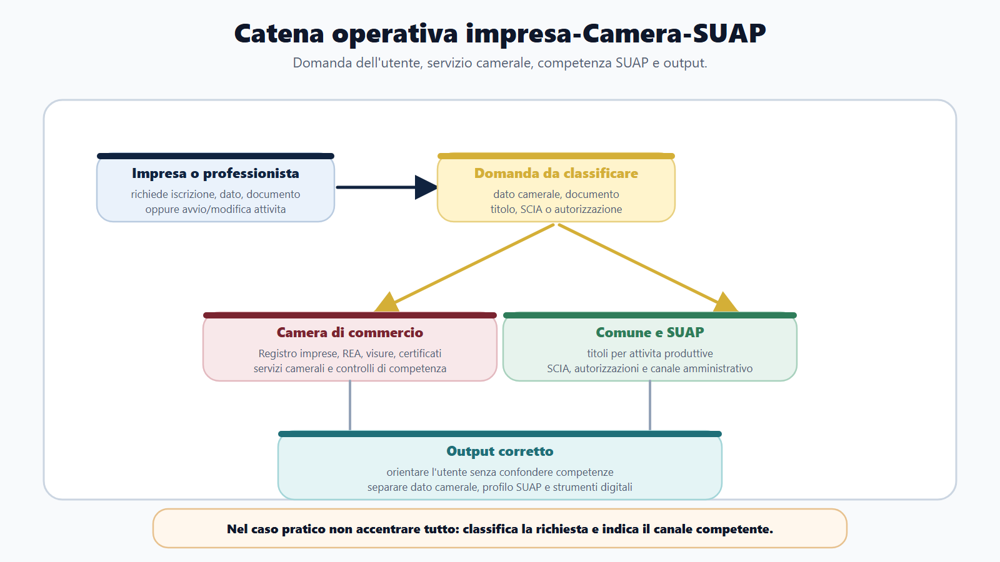

VOL-02 · Capitolo 45
M-FL03
Camere di commercio,
sistema camerale e Unioncamere
Non sono Comuni, non sono Province, non sono sportelli generici. Sono enti pubblici del sistema camerale, con autonomia funzionale e compiti legati a imprese, mercato, pubblicità legale e sviluppo delle economie locali.
01 · Il problema in prova
Una mappa diversa dal Comune
Un bando camerale non si affronta con solo diritto amministrativo generale, né studiando diritto commerciale come un esame universitario. Se sbagli la soglia iniziale, sbagli anche Registro, sportello e lettura del bando.
Che cos’è questo ente
Ente pubblico con autonomia funzionale. Opera in una circoscrizione territoriale, ma non rappresenta una comunità politica come il Comune. L’identità sta nelle funzioni: imprese, pubblicità legale, servizi, mercato.
A che serve in prova
A non collocare il procedimento sull’ente sbagliato. Prima di un ufficio o di un adempimento, chiedi quale funzione pubblica è coinvolta: dato iscritto, titolo per l’attività, indirizzo nazionale di sistema.
Ogni nozione camerale deve diventare una relazione: ente, utente, servizio, interesse pubblico, output. Senza questa catena il modulo resta un elenco.
La parola decisiva è funzionale.
La Camera non coincide con una comunità territoriale. Opera per funzioni di interesse generale collegate al sistema delle imprese. Per questo nel programma compaiono Registro, REA, visure, ComUnica, SUAP telematico, metrologia e servizi promozionali: non è eterogeneità, è identità dell’ente.
02 · Come usare il capitolo
Cinque domande che governano lo studio
Se riesci a rispondere a queste domande, il modulo diventa governabile. I capitoli successivi entreranno nel Registro, nei servizi e nell’organizzazione: qui si fissa il quadro.
| Domanda | Perché conta |
|---|---|
| Quale ente svolge la funzione? | Evita di confondere Camera, Comune, Regione o Ministero. |
| Quale utente è coinvolto? | Impresa, professionista, cittadino, altra PA, associazione o operatore economico. |
| Quale servizio viene richiesto? | Visura, certificato, pratica, iscrizione, comunicazione, supporto, controllo. |
| Quale interesse pubblico? | Pubblicità legale, certezza dei dati, semplificazione, correttezza del mercato, fede pubblica. |
| Quale output deve produrre il candidato? | Risposta orale, schema, caso di sportello, mini-istruttoria, checklist. |
03 · BANDO
Cinque decisioni su questo capitolo
Il bando decide la profondità. Un profilo di supporto pesa su organizzazione e comunicazione; un profilo anagrafico pesa su Registro, visure e pratiche; un profilo di tutela pesa su controlli e fede pubblica.
| Che cosa fai | Se la salti | |
|---|---|---|
| B — Bando | Verifica se riguarda una Camera, Unioncamere o un ente del sistema camerale: profilo, servizio, prove. | Studi un concorso comunale o un esame di diritto commerciale. |
| A — Aree | Collega ordinamento camerale, Registro, servizi, mercato, organizzazione, procedimento. | Tratti la materia come un elenco di sigle. |
| N — Nuclei | Autonomia funzionale, sistema camerale, Unioncamere, pubblicità legale, sportello, tutela del mercato. | Confondi ente, funzione e servizio. |
| D — Diario | Segna «Camera = Comune», «Registro = archivio», diritto commerciale fuori scala. | Ripeti le tre trappole all’orale. |
| O — Output | Mappa ente-funzione-servizio, risposta orale, caso di sportello, checklist di bando. | Elenco di articoli senza decisione. |
04 · Mappa
Dal bando camerale all’output
La mappa taglia il superfluo. Chi studia il Registro senza capire la Camera perde il contesto. Chi studia l’ordinamento senza collegarlo a servizi e procedimenti resta teorico.

Prima domanda: quale funzione camerale rende corretta la risposta? Il bando attiva ente, profilo, servizio e prove; poi aree, nuclei, diario e output.
05 · Autonomia funzionale
Tre informazioni nella definizione
Fonte di base: L. 580/1993. Le Camere sono enti pubblici dotati di autonomia funzionale, per funzioni di interesse generale riferite al sistema delle imprese e allo sviluppo delle economie locali. Non serve un commento articolo per articolo: serve la definizione operativa.
| Piano | Che cosa significa |
|---|---|
| Natura pubblica | Legalità, imparzialità, buon andamento, procedimento, responsabilità, trasparenza, accesso, privacy, digitale. |
| Autonomia funzionale | Non è ente locale territoriale. Identità nelle funzioni: imprese, mercato, pubblicità, servizi, semplificazione. |
| Circoscrizione | Territorio come contesto economico-amministrativo: imprese, unità locali, filiere, pratiche. Non come nel modulo comunale. |
Ente pubblico ad autonomia funzionale, nel sistema camerale. Funzioni di interesse generale per le imprese: Registro, pubblicità, servizi, semplificazione, mercato, sviluppo locale.

06 · Tre errori
Autonomia funzionale nella prova
Quando ti chiedono che cosa sono le Camere, rispondi in quattro passaggi: natura pubblica, autonomia funzionale, sistema camerale, funzioni verso imprese, mercato e sviluppo locale.
Non è ente locale territoriale
Opera territorialmente, ma appartiene al sistema camerale. Non è Comune, Provincia, Città metropolitana o Regione. Territorio politico e circoscrizione funzionale non coincidono.
Non è ufficio del MIMIT
Il Ministero esercita vigilanza e raccordo secondo l’ordinamento. La Camera non è una semplice articolazione periferica statale.
Non è rappresentanza privata
Le imprese sono il baricentro funzionale. L’ente svolge funzioni pubbliche: registri, pubblicità, certificazioni, controlli, servizi.
Studiare M-FL03 con categorie di altri moduli: organi comunali da un lato, società e bilanci dall’altro. La correzione è la catena ente pubblico — autonomia funzionale — sistema camerale — funzione — servizio — procedimento — output.
07 · Sistema camerale
Rete di enti, non gerarchia fittizia
La L. 580/1993 colloca la Camera nel sistema camerale italiano: Camere, unioni regionali, Unioncamere e strutture che rendono possibili servizi comuni. Dire che «Unioncamere comanda sulle Camere» non descrive la relazione.
| Livello | Che cosa ricordare | Errore da evitare |
|---|---|---|
| Camera di commercio | Ente pubblico competente nella propria circoscrizione per le funzioni camerali. | Trattarla come ufficio ministeriale o come Comune. |
| Unione regionale | Sostiene il raccordo delle Camere in ambito regionale secondo l’assetto del sistema. | Attribuirle automaticamente ogni funzione della singola Camera. |
| Unioncamere | Rappresenta e raccorda il sistema nazionale; promuove indirizzi, servizi e iniziative comuni. | Descriverla come superiore gerarchico che decide ogni pratica. |
| Strumenti di sistema | Dati, standard, piattaforme, supporti operativi condivisi. | Confondere lo strumento tecnico con l’ente competente per il procedimento. |
Nei casi pratici individua prima la Camera territorialmente competente. Poi verifica se servono un raccordo di sistema, uno strumento digitale o un’altra amministrazione.
08 · Unioncamere
Rappresenta e raccorda, non sostituisce
Unione italiana delle Camere di commercio, industria, artigianato e agricoltura. Ente pubblico nazionale di rappresentanza e raccordo. In un progetto condiviso separa tre piani: chi promuove l’iniziativa, chi mette l’infrastruttura, chi adotta il provvedimento o presta il servizio al singolo utente.
Formula equilibrata
Unioncamere cura gli interessi generali delle Camere e degli altri organismi del sistema, promuove indirizzi e iniziative comuni e non sostituisce la Camera competente nell’esercizio delle sue funzioni e dei suoi procedimenti.
Presentare Unioncamere come superiore gerarchico che decide ogni procedimento locale altera il sistema e impedisce di individuare l’ente competente per il caso concreto.

09 · Funzioni
Dalla definizione ai servizi visibili
Non basta nominare una funzione. Occorre mostrarne lo scopo, collegarla a un’attività amministrativa e indicare quale risultato riceve l’utente. La stessa parola «impresa» non individua la funzione: conta l’oggetto concreto della domanda.
| Area | Funzione pubblica | Esempi di output |
|---|---|---|
| Registro imprese e REA | Pubblicità legale e anagrafica economica | Iscrizione, variazione, visura, certificato, fascicolo, deposito. |
| Semplificazione | Unificazione e digitalizzazione degli adempimenti | ComUnica, SUAP telematico, pratiche online, assistenza. |
| Regolazione del mercato | Correttezza, fede pubblica, tutela e controlli | Metrologia, vigilanza, mediazione, sicurezza prodotti, protesti. |
| Servizi alle imprese | Supporto a competitività e sviluppo locale | Informazione, promozione, digitalizzazione, internazionalizzazione. |
| Organizzazione e comunicazione | Funzionamento dell’ente e relazione con gli utenti | Sportello, trasparenza, procedimenti, supporto. |
Un’impresa chiede un documento ufficiale e informazioni su un’iniziativa di digitalizzazione. Il primo bisogno è documentale (Registro); il secondo è promozionale. Non si fondono in un’unica pratica: si scompongono output, canali e limiti.
10 · Schema
Funzioni camerali e servizi al mercato
Le funzioni non sono un listino di sportelli. Ciascuna area — anagrafe economica, semplificazione, regolazione, servizi alle imprese — ha un interesse pubblico, un output e un limite. Lo schema aiuta a classificare la richiesta prima di rispondere.

Dal Registro alla regolazione del mercato: aree distinte, non un unico «servizio alle imprese».
10 · Metodo
Classificare prima di orientare
In una risposta scritta conviene seguire quattro passaggi: qualificare l’area funzionale, individuare l’interesse pubblico, indicare il servizio, chiudere con l’output. Così si evita di presentare la Camera come consulente privato dell’impresa.
Anagrafici
L’operatore verifica pratica, dati, allegati e output richiesto. Visura, certificato, deposito: conoscibilità dei dati registrati.
Regolazione
Distingue informazione, vigilanza, controllo e eventuale seguito procedimentale. Non anticipa la sanzione.
Promozione
Ricostruisce destinatari, requisiti, misura disponibile e modalità di accesso. Non garantisce l’ammissione.
Elencare iniziative promozionali quando il bando chiede servizi alle imprese. L’ente informa e assiste nell’ambito delle proprie attribuzioni, secondo competenza, procedimento e imparzialità.
11 · Territorio e SUAP
Accesso unitario, competenze distinte
Il modulo è Funzioni Locali perché la Camera lavora in un ecosistema territoriale. Il punto di osservazione, però, sono le imprese, non la comunità comunale. Una piattaforma può offrire un punto di accesso unitario: non fonde gli enti in un unico ufficio.
| Piano | Che cosa separare |
|---|---|
| Registro | Profilo anagrafico e pubblicitario: dati, atti, visure, certificati. |
| SUAP | Profilo amministrativo dell’attività produttiva: titolo, SCIA, autorizzazione comunale. |
| Sistema camerale | Supporto digitale e flussi. Lo strumento non è il titolare della funzione. |
| Controlli | Comunicazioni tra amministrazioni. L’interoperabilità non unifica la competenza. |
Verbi precisi: verificare, classificare, inoltrare, comunicare, rilasciare. Evita l’indistinto «autorizzare tutto».

12 · Caso guidato
Orientare un’impresa senza accentrare
Allo sportello si presenta un imprenditore che deve aggiornare alcuni dati, ottenere una visura e capire se la pratica dell’attività produttiva passa dal SUAP. «La Camera si occupa delle imprese, quindi risolve la pratica» è troppo generica.
| Piano | Domanda da fare | Risposta operativa |
|---|---|---|
| Registro / REA | Quale dato va iscritto, modificato o consultato? | Verificare pratica, visura, certificato, fascicolo o aggiornamento anagrafico. |
| Servizio documentale | Quale documento chiede l’utente? | Indirizzare verso visura, certificato, fascicolo o altro output ufficiale. |
| SUAP | Titolo, SCIA, autorizzazione o adempimento comunale? | Distinguere il profilo SUAP e indicare il canale corretto. |
| Istruttoria | Servono verifica documentale o presupposti? | Operare secondo procedimento, termini, competenze e controlli. |
| Comunicazione | L’utente ha bisogno di indicazioni comprensibili? | Fornire indicazioni chiare senza promettere esiti non verificati. |
13 · Bando camerale
Il nome dell’ente non è il programma
I bandi camerali mostrano profili collegati a servizi, supporto organizzativo, comunicazione, servizi anagrafici, tutela del mercato e promozione. Non tutto ciò che riguarda le imprese entra nel concorso: diritto societario e marketing solo nei limiti richiesti.
Nucleo comune da riusare
Procedimento, pubblico impiego, trasparenza, privacy, PA digitale, contratti, informatica. M-FL03 non duplica il libro base: lo applica all’ente camerale.
Delta specialistico da aggiungere
Sistema camerale, Registro imprese, servizi alle imprese, tutela del mercato. La profondità la decidono profilo, mansioni, prove e fonti richiamate.
Profilo (istruttore, funzionario, comunicazione, servizi); materie nominate (Registro, anagrafe, mercato, promozione); tipo di prova; se serve l’ente, il servizio o anche il procedimento; quali materie comuni si riusano senza duplicarle.
14 · Verifica
Commissario, trappola, quiz
Mi parli delle Camere e del sistema camerale
Natura pubblica e autonomia funzionale; imprese ed economie locali; inserimento nel sistema; Unioncamere come rappresentanza e raccordo; funzioni: Registro, pubblicità, servizi, semplificazione, mercato. Chiusura: nei bandi diventano procedimenti, sportelli, certificazioni e casi. Non partire dalla storia dell’ente.
Sono enti locali come i Comuni?
No, non in quel senso. Sono enti pubblici ad autonomia funzionale, nel sistema camerale. Operano in una circoscrizione territoriale, ma non sono enti locali territoriali. La trappola sta nella parola «locale»: circoscrizione funzionale, non comunità politica.
Definizione corretta: ente pubblico con autonomia funzionale, nel sistema camerale. Unioncamere rappresenta e raccorda senza sostituire la Camera competente. Coppia funzione-servizio: pubblicità legale — visura e certificato del Registro. Un’impresa che chiede iscrizione e titolo per l’attività va orientata su due piani: camerale e SUAP.
15 · Mini-esercizio
Leggi l’estratto e compila la griglia
Profilo: istruttore amministrativo presso Camera di commercio. Possibile assegnazione a servizi anagrafici, tutela del mercato, servizi promozionali o supporto organizzativo. Prova scritta e orale su ordinamento camerale, procedimento, trasparenza, servizi alle imprese e competenze digitali.
| Voce | Soluzione attesa |
|---|---|
| Ente che assume | Camera di commercio. |
| Area specialistica | Sistema camerale, Registro e servizi anagrafici, mercato, servizi alle imprese. |
| Materie comuni | Procedimento, trasparenza, privacy, PA digitale, pubblico impiego, comunicazione. |
| Materie M-FL03 | Ordinamento camerale, Unioncamere, Registro/REA, servizi alle imprese, tutela del mercato. |
| Caso probabile | Visura o certificazione, pratica anagrafica, orientamento utente, controllo documentale. |
| Errore da evitare | Rispondere come se fosse un concorso comunale generico. |
16 · Da tenere ferme
Cinque regole, con il perché
1. La Camera è ente pubblico con autonomia funzionale, non un Comune e non un ufficio periferico statale.
2. Il sistema camerale è una rete: Camere, unioni regionali, Unioncamere, organismi strumentali. Non una piramide sulle pratiche.
3. Unioncamere raccorda e rappresenta; non sostituisce la Camera competente nel procedimento.
4. Ogni nozione deve diventare relazione: ente, funzione, servizio, utente, interesse pubblico, output.
5. Registro e SUAP possono dialogare digitalmente; le competenze restano distinte. L’accesso unitario non è competenza unica.
Prossimo capitolo
Registro imprese, REA e pubblicità legale
Dal quadro dell’ente al servizio più visibile: iscrizione, visura, certificato, deposito. Senza trattare il Registro come un archivio.